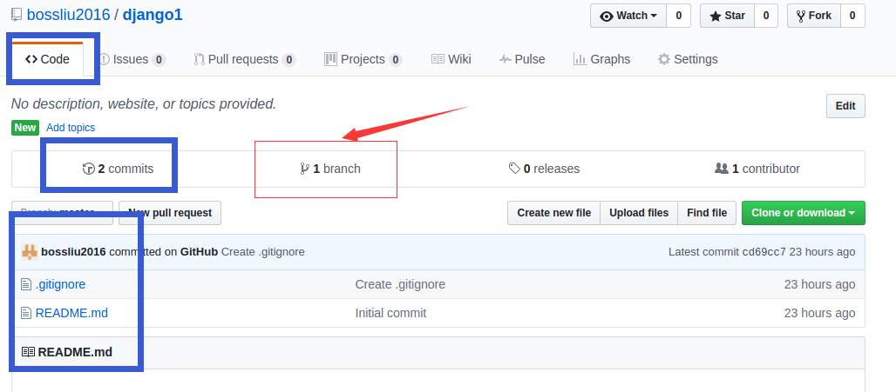
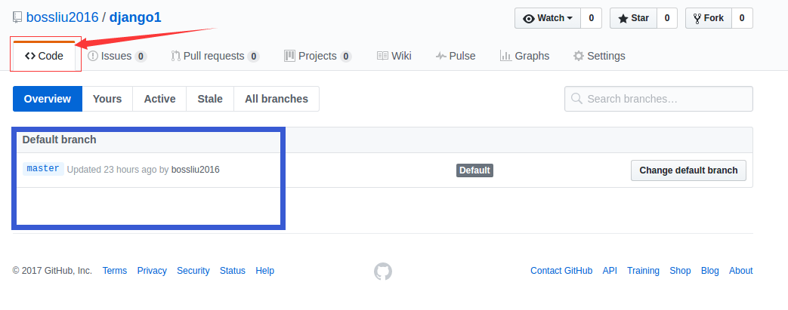
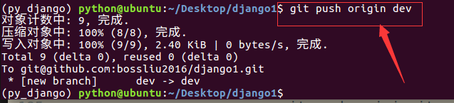
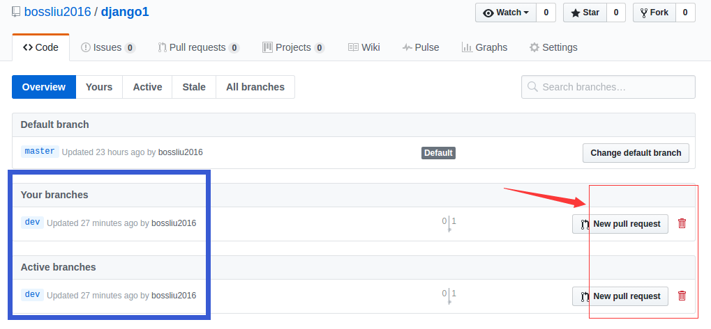
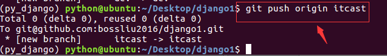
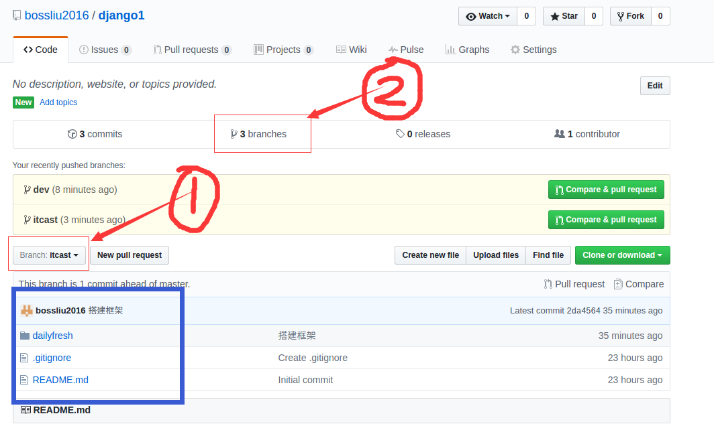
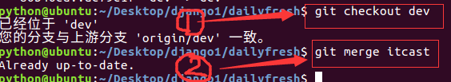
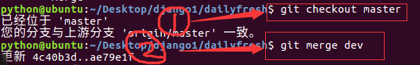
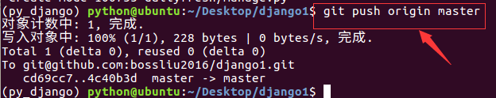
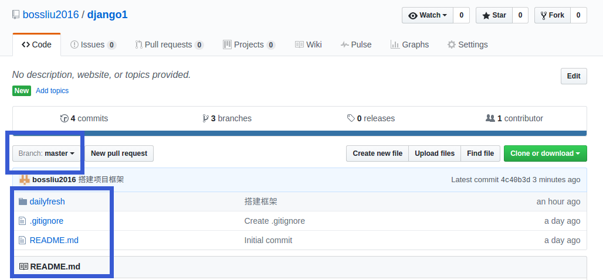

上传分支
- 当从远程仓库克隆时，实际上Git自动把本地的master分支和远程的master分支对应起来
- 远程仓库的默认名称是origin
- 推送前github上文件列表如下图

- 推送前github上分支列表如下图

- 推送分支，就是把该分支上的所有本地提交推送到远程库，推送时要指定本地分支，这样，Git就会把该分支推送到远程库对应的远程分支上
git push origin 分支名称
例：
git push origin dev
- 执行命令后提示如下

- 因为dev分支中没有文件操作，所以文件列表不变，但是分支列表增加了一项
- 点击垃圾桶可以删除指定分支，但是不要删

- 当前文件在itcast分支上，所以推送itcast分支
git push origin itcast
- 执行命令后提示如下

- 推送后github上文件列表如下图，注意在红线1处选择itcast分支

- 推送后github上分支列表如下图，在上图中点击红线2处

- 将itcast分支合并到dev分支
git checkout dev
git merge itcast

- 推送dev分支
git push origin dev
- 将dev分支合并到master分支
git checkout master
git merge dev

- 推送master分支
git push origin master
- 推送命令执行后如下图

- 在浏览器查看master分支的文件列表如下
